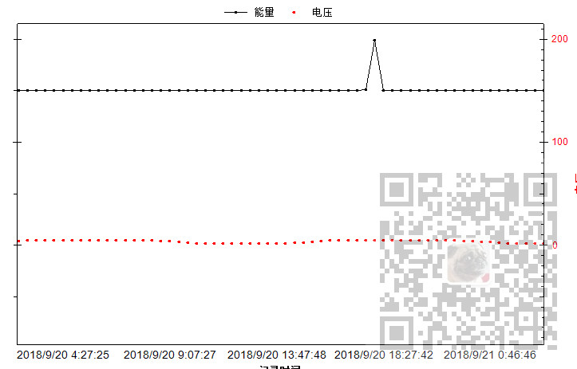

Winform中设置ZedGraph的曲线为散点图：
https://blog.csdn.net/BADAO_LIUMANG_QIZHI/article/details/102465399
在上面设置单条曲线为散点图后的思路，继续扩展设置曲线为折线、点折图、散点图。

注：
博客主页：
https://blog.csdn.net/badao_liumang_qizhi
关注公众号
霸道的程序猿
获取编程相关电子书、教程推送与免费下载。
读取配置文件内容获取设置的曲线样式后
LineItem myCurve = myPane.AddCurve(yList[i].Title, DataChartHelper.SetCurveText(interval, xAttribute.TitleKey, yList[i].TitleKey), System.Drawing.ColorTranslator.FromHtml(yList[i].Color), SymbolType.None);根据配置文件设置曲线类型
myCurve = setCurveType(myCurve, yList[i].Type, yList[i].Color);
然后调用设置曲线样式的方法，在方法里
private static LineItem setCurveType(LineItem myCurve, string p,string color)
{
switch(p)
{
case "折线":
myCurve.Symbol.Type = SymbolType.None;
myCurve.Line.IsVisible = true;
break;
case "点折线":
myCurve.Symbol.Type = SymbolType.Circle;
myCurve.Symbol.Fill = new Fill(System.Drawing.ColorTranslator.FromHtml(color));
myCurve.Symbol.Size = 3;
break;
case "点离散":
myCurve.Symbol.Type = SymbolType.Circle;
myCurve.Symbol.Fill = new Fill(System.Drawing.ColorTranslator.FromHtml(color));
myCurve.Symbol.Size = 3;
myCurve.Line.IsVisible = false;
break;
default :
myCurve.Symbol.Type = SymbolType.None;
myCurve.Line.IsVisible = true;
break;
}
return myCurve;
}